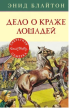

Дело о краже лошадей

В заключительной книге серии "Секретная семерка" рассказывается о последнем деле команды Питера и его друзей. Ребята приходят на помощь старому Толли, который работает у жестокого фермера, готового застрелить прекрасную лошадь, когда у неё заболели ноги. Для среднего школьного возраста.